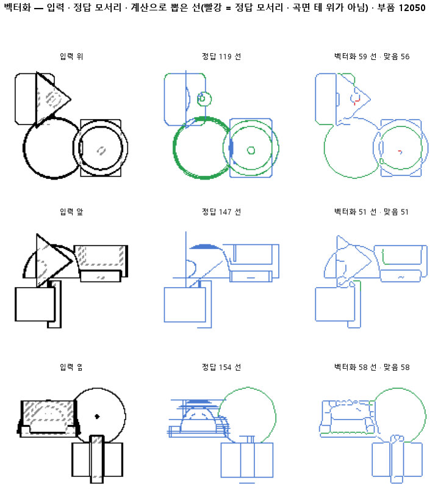

한 줄로
물음: 점선으로 그린 숨은선이 굵은 띠로 칠해져 있을 때, 띠를 먼저 메워 한 줄로 만들면 숨은선이 덜 끊길까?
답: 덜 끊긴다. 숨은선 모서리가 엉뚱한 데서 끊기는 비율이 5.19 %에서 2.27 %로, 절반 아래가 됐다. 보이는 선과 전체 점수는 거의 그대로다. 기준 넷을 모두 넘어 판정은 통과다.
왜 이 판을 했나
선 목록은 두 지도에서 뽑는다. 하나는 판 137 모델이 화소마다 선 종류를 찍은 칠한 지도다. 다른 하나는 부품 모양에서 바로 그린 정답 지도다. 판 141에서 끊긴 토막을 잇는 단계를 넣었다. 그래도 정답 모서리 하나가 토막 없이 한 선으로 나오는 비율은 0.71에 머물렀다. 141에서 정한 목표는 0.80이다.
선을 뽑을 때는 먼저 칠한 띠를 1화소 두께로 깎아 뼈대를 만든다. 점선이 굵은 띠로 칠해지면 이 뼈대가 사다리처럼 갈라진다. 그러면 잇기 전에 이미 잘게 쪼개진다.
바꾼 것 하나
숨은선 화소만 5×5 칸으로 메운 뒤 뼈대를 만들었다. 보이는 선은 건드리지 않았다. 대조는 메우기만 끈 같은 계산이다. 이 판 안에서 함께 돌렸다. 그 숫자가 141 보고와 똑같이 나와서 표에는 141로 적었다. 시험 부품은 같은 299개다.
결과

| 이 판 (143) | 대조 (141) | 목표 | 넘었나 | |
|---|---|---|---|---|
| 숨은선 모서리가 갈림목 아닌 데서 끊김 | 2.27 % | 5.19 % | 대조의 절반 아래 | ✓ |
| 보이는 선 중 찾은 비율 | 0.91 | 0.91 | 0.01 넘게 안 떨어짐 | ✓ |
| 보이는 선 종류를 맞게 가름 | 0.85 | 0.85 | 0.01 넘게 안 떨어짐 | ✓ |
| 정답 모서리와 맞음 (F1) | 0.91 | 0.91 | 안 떨어짐 | ✓ |
| 숨은선 중 찾은 비율 | 0.73 | 0.69 | — | |
| 한 선으로 뽑힌 모서리 | 0.75 | 0.71 | — | |
| 선 종류 전체 | 0.87 | 0.88 | — | |
| 그린 선 중 맞은 비율 | 0.99 | 1.00 | — |
갈림목은 선 셋 이상이 만나는 곳이다. 거기서 끊기는 건 정상이라 빼고 센다. F1은 찾은 비율과 맞은 비율을 함께 본 점수이고, 1이면 완벽하다.
왜 이렇게 나왔나
확인한 것
- 나아진 건 숨은선 쪽이다. 숨은선을 찾은 비율이 0.69에서 0.73으로 올랐다. 보이는 선은 찾은 비율과 종류 모두 0.01 안쪽으로만 움직였다.
- 칠이 아니라 계산을 바꾼 효과다. 정답 지도를 넣어도 숨은선 끊김은 1.79 %이고, 한 선 비율은 0.77이다. 141에서 정답 지도로 낸 0.72보다 높다.
- 선 종류 전체가 0.88에서 0.87로 내려갔다. 보이는 선의 종류는 그대로이니, 떨어진 몫은 숨은선에서 나왔다.
짐작 (아직 확인 안 함)
- 그린 선 중 맞은 비율이 1.00에서 0.99로 내려갔다. 5×5로 메우다 옆 선과 붙어 헛선이 생겼을 것 같다.
- 굵어진 띠의 뼈대가 짧은 원호를 직선처럼 펴서 숨은선 종류가 틀렸을 수 있다.
- 한 선 비율이 0.75에 그친 건 갈림목에서 끊기는 몫 때문으로 본다. 이번 판은 그 몫을 건드리지 않았다.
한계
- 시험 부품 299개로 한 번만 돌렸다.
- 메움 크기는 5×5 하나만 써 봤다.
- 숨은선의 종류 정확도는 따로 재지 않았다. 종류가 숨은선에서 떨어졌다는 건 뺄셈으로만 안다.
- 정답 지도가 칠한 지도보다 나아야 하는데, 이번에도 F1이 둘 다 0.91이다. 세 판 연달아 이런데, 까닭을 아직 모른다.
배운 것과 다음
숨은선이 쪼개진 원인 하나는 점선 띠의 모양이었다. 잇기 전에 띠를 메우면 끊김이 절반 아래로 준다. 대신 숨은선 종류와 맞은 비율을 조금 잃었다.
- 종류가 바뀐 숨은선과 헛선을 그림으로 모아 원인을 확인한다.
- 메움 크기를 3×3과 7×7로 바꿔, 끊김과 종류가 어떻게 맞바뀌는지 잰다.
- 갈림목에서 끊기는 몫을 따로 세어, 한 선 비율이 목표 0.80에 왜 못 닿는지 본다.